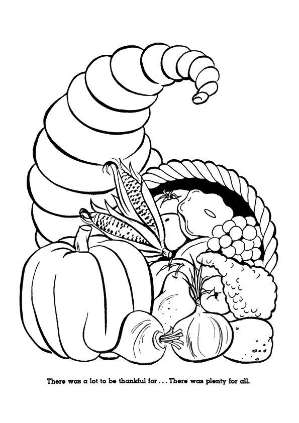
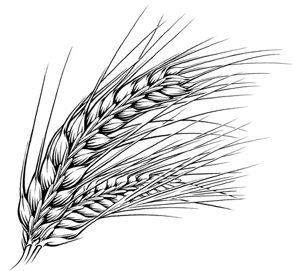

www.logrus.ca Year
A
Thanksgiving
This week's lessons: Deuteronomy 8:7-18 and Psalm 65 • 2 Corinthians 9:6-15 • Luke 17:11-19
Opening prayer by leader, or invite another participant to pray, or use:
Almighty God, who has caused all Holy Scripture to be written for our learning, open our ears and hearts today to learn from your word and from one another, we ask in Jesus' Name. Amen
Set the calendar-clock to the right date. Pentecost is the season of the church's growth, beginning with Pentecost Day which is the birthday of the church, and continuing to the end of the church year.Its colour is green.
Today, the Gospel reviews for us the story of Jesus' healing ten lepers. The theme is thankfulness (unsurprisingly): God's reminder to the People of God to be thankful for the promised land and not take it for granted, and the one leper who remembered to come back and thank Jesus when the other nine did not.
What was the sermon on? -
What was the Gospel lesson? -
Pew-work Hand-outs
“Pew-work” is like Home-work, except that it is done in the pews, instead of being done at home. Because it is focussed on the readings (as the sermon, presumably, also is) it can be done during the sermon to help the listener concentrate. Or, it can be done while waiting for everyone else to finish their communion. It isn't done during prayers, or hymns, or the readings, because
During Prayers, we pray
During Hymns, we sing
During the Readings, we listen


|
The Lord your God is bringing you into a good land with streams that flow from springs in the valleys and hills. You can dig for copper in those hills, and the stones are made of iron ore. And you won’t go hungry. Wheat and barley fields are everywhere, and so are vineyards and orchards full of fig, pomegranate, and olive trees, and there is plenty of honey. |
V D O Y T N E L P J H W R K G C O O M D T L C T I O V R G Y K A H S F P D D I E C N A M Y P Y H V N S D R A Y E N I V O D O D E L R L L B H O P S R U O O L M T S X A T R E E S A S T B G S T A E H W V |
BARLEY COPPER FIG GOD HILLS HONEY IRON LAND LORD OLIVE ORCHARDS PLENTY STREAMS TREES VALLEYS VINEYARDS WHEAT
|
Who
are some people that have been good to you this week?
_________________
____________________________________________________________________
What
did they do for you?
____________________________________________
____________________________________________________________________
What
are some ways you can thank them for what they have done?
____________
____________________________________________________________________
____________________________________________________________________
Who
are some people that make our community, city, or country a better
place?____________________________________________________________________
____________________________________________________________________
What
are some way we can thank those “public servants” for what they
have done?
____________________________________________________________________
____________________________________________________________________
Middle-School
School Pew-work
7For the Lord thy God bringeth thee into a good land, a land of brooks of water, of fountains and depths that spring out of valleys and hills;
8A land of wheat, and barley, and vines, and fig trees, and pomegranates; a land of oil olive, and honey;
9 A land wherein thou shalt eat bread without scarceness, thou shalt not lack any thing in it; a land whose stones are iron, and out of whose hills thou mayest dig brass.
10When thou hast eaten and art full, then thou shalt bless the Lord thy God for the good land which he hath given thee.
11Beware that thou forget not the Lord thy God, in not keeping his commandments, and his judgments, and his statutes, which I command thee this day:
12Lest when thou hast eaten and art full, and hast built goodly houses, and dwelt therein;
13And when thy herds and thy flocks multiply, and thy silver and thy gold is multiplied, and all that thou hast is multiplied;
14Then thine heart be lifted up, and thou forget the Lord thy God, which brought thee forth out of the land of Egypt, from the house of bondage;
15Who led thee through that great and terrible wilderness, wherein were fiery serpents, and scorpions, and drought, where there was no water; who brought thee forth water out of the rock of flint;
16Who fed thee in the wilderness with manna, which thy fathers knew not, that he might humble thee, and that he might prove thee, to do thee good at thy latter end;
17And thou say in thine heart, My power and the might of mine hand hath gotten me this wealth.
18But thou shalt remember the Lord thy God: for it is he that giveth thee power to get wealth, that he may establish his covenant which he sware unto thy fathers, as it is this day.
Describe
your daily life: your food and shelter, possessions, work and
liesure activities: is your life more a “desert experience” or a
“promised land” experience?
_________________________________________
_________________________________________________________________________________________________________________________________________________________________________________________________________________________________________________________________________________________________________________________________________________________________________________________________________________________________________________________________________________________________________________
_______________________________________________________________________________________________________________________________________________________________________________________________________________________________________________________________________________________________________________________________________________________________________________________________________________________________
|
What Scripture is the Sermon is based on? |
__________________________________ |
|
What is the main point of the Sermon? |
__________________________________ |
|
Write down any figures of speech used by the preacher (Metaphors, Similes, hyperbole) |
__________________________________ |
|
Write down any new, unusual or particularly interesting words the preacher uses |
_______________
|
Focus Statement: “Take care that you do not forget the LORD your God”
|
_________________________________________ |
|
_________________________________________ |
|
_________________________________________ |
|
_________________________________________ |